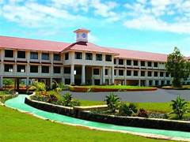

The Federal Institute of Science and Technology (FISAT) is a self-financing private engineering college established and promoted by the Federal Bank Officers’ Association Educational Society (FBOAES).
The FBOAES is an initiative of the Federal Bank Officers’ Association (FBOA), the sole representative body of all Federal Bank officers. Federal Institute of Science and Technology (FISAT) occupies a unique position in South India’s Professional Education Sector.
FISAT has been designed and developed to become a “Centre of Excellence” in professional education, with the motto “Focus on Excellence.” Established in 2002, the college has carved a niche for itself in the education sector, as evidenced by its students’ outstanding performance in academics, placements, and extra-curricular and co-curricular activities. FISAT has launched an ambitious plan to improve the quality and value of education while also developing high-quality individuals. The institution is accredited by the National Assessment and Accreditation Council (NAAC) with an ‘A+’ grade in the 2nd cycle. The National Board of Accreditation (NBA) has accredited six B.Tech programmes. The institution is also ISO 9001:2015 certified. FISAT is located in Mookannoor, near Angamaly in Ernakulam District, Kerala, the birthplace of The Federal Bank Ltd. founder, Late K P Hormis, and the campus is named “Hormis Nagar” in his honour. FISAT is affiliated with APJ Abdul Kalam Technological University (KTU) and is approved by the All India Council for Technical Education (AICTE), New Delhi. FISAT offers seven B.Tech engineering programmes, an MBA programme (with specialisations in Finance, Marketing, Human Resource Management, Information System, Production & Operations Management, and International Business), an MCA programme, five M.Tech programmes and PhD programmes.
sneha
At the end of the day, you are solely responsible for your success and your failure. And the sooner you realize that, you accept that, and integrate that into your work ethic, you will start being successful. As long as you blame others for the reason you aren't where you want to be, you will always be a failure.
Java Tutorial
SQL tutorial
HTML tutorial
In French, the phrase"s'il te pla?t" means "please."
Click to Expand
This is the hidden content that becomes visible when the user clicks the summary.
Example of cite tag
A famous book:
Learning Web Design written by Jennifer Niederst Robbins
programming language
java java
Welcome to our Website
Thank you for visiting our website. We provide a wide range of products and services to meet your needs.
About Us
Learn more about our company and our mission to deliver high-quality solutions to our customers.
H2O
The last date of apply for online classes is 12/02/2019
Example of HTML bdi tag
This ???? ????? Content is written in Arabic language

This is a caption for the image. pneumonoultramicroscopicsilicovolcanoconiosis pneumonoultramicroscopicsilicovolcaniosis